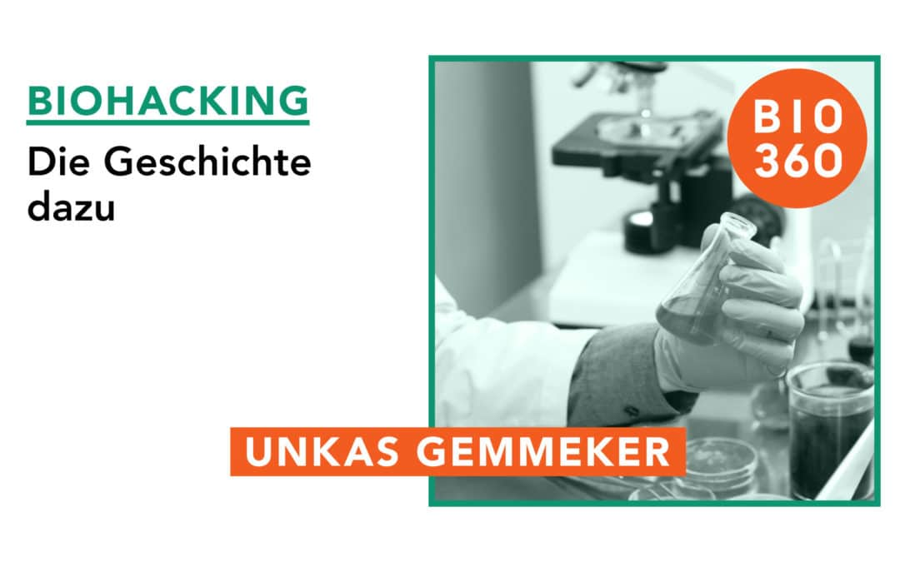

Biohacking, ein Begriff, der in den letzten Jahrzehnten immer mehr an Bedeutung gewonnen hat, beschreibt die Optimierung des eigenen Körpers und Geistes durch technologische, biologische und selbstexperimentelle Methoden.
Die Ursprünge des Biohackings lassen sich auf die 1980er und 1990er Jahre zurückführen, als eine kleine Gruppe von Wissenschaftlern und Technikern begann, sich für die Selbstoptimierung zu interessieren.
In den frühen 2000er Jahren formierten sich erste Biohacker-Gruppen, die experimentelle Projekte ins Leben riefen, wie z.B. DIY-Cyborg-Technologien, das Einpflanzen von RFID-Chips und die Nutzung von Nootropika zur kognitiven Verbesserung.
Heutzutage hat Biohacking viele Formen angenommen, von einfacher Gesundheitsoptimierung durch Ernährung und Sport bis hin zu fortschrittlichen genetischen Manipulationen und technologischen Implantaten.